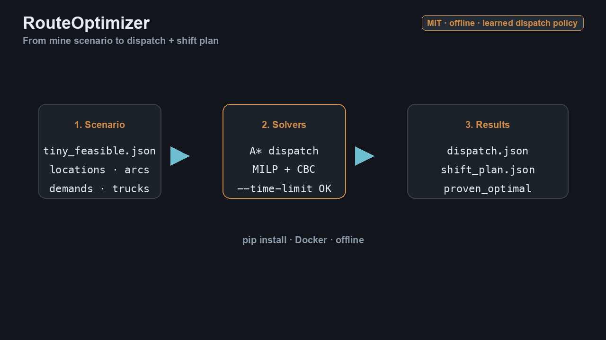

Hugging Face · Alio IT
RouteOptimizer
An open-source machine-learning model for mine fleet dispatch, plus A* and CBC solvers that still produce the proven plans.

CLI demo: scenario JSON in → dispatch / shift-plan JSON out.
Install
pip install route-optimizer
# with samples from the GitHub repo:
git clone https://github.com/AlfonsoALIO/RouteOptimizer.git
cd RouteOptimizer
route-optimizer dispatch samples/tiny_feasible.json -o out/dispatch.json --segments 8 --trucks 2
route-optimizer shift-plan samples/tiny_feasible.json -o out/shift_plan.json --segments 4What’s in the release
- ML dispatch policy — small network that imitates A* among legal moves (~91% holdout vs ~56% greedy).
- A* dispatch — truck movement plan over a shift.
- MILP shift plan — PuLP + open-source CBC (no Gurobi/CPLEX).
- MIT license — offline JSON I/O; no live telematics in this release.